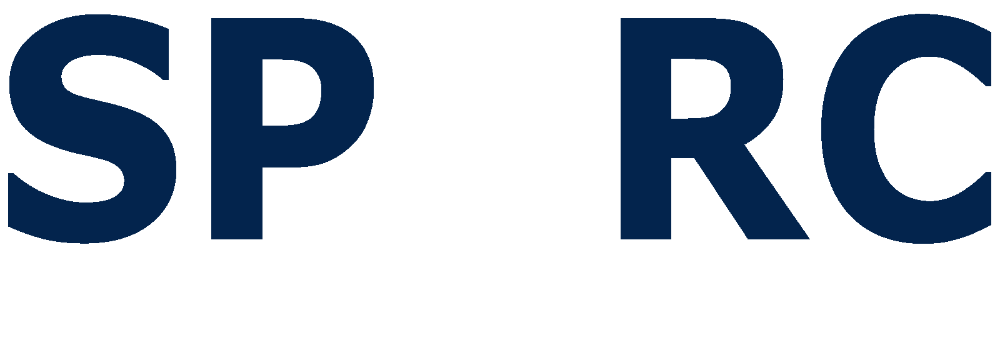

SPaRC stands for Student Projects and Research Committee. It was founded by the Auburn University Electrical Engineering Department in 2006 to provide students with the opportunity to test out their own ideas, integrate concepts learned in class, compete with peers at other schools, and demonstrate their products to the public. SPaRC basically functions as a hackerspace as it provides the lab space, tools, materials, and funding for projects. If a student pays for their own materials they can even keep their projects.
Any Auburn University student undergraduate or graduate regardless of major or year can work on a project facilitated by SPaRC. SPaRC provides the opportunity for younger students to work with older students. It is a great way to get real problem solving experience and apply some of the knowledge that is learned in classes. It also serves as a great resume builder in which can help get members get involved in Undergraduate research and CO-OP’s and internships.
Joining SPaRC is really easy. Membership is free. All you have to do is log 5 hours in the lab in order to familiarize yourself with the club. After that, you will be given 24-7 code access to the lab and building. SPaRC usually formally meets once a week in Broun 256 at 6:00 PM on Thursdays to review the status of the various projects and learn new skills. If you would like more information or are interested in joining please email us at: sparc@auburn.edu.

As a demonstration for Auburn's E-Day, we are building a full size tesla coil. A tesla coil acts as a giant voltage transformer that can generate arcs of electricity in mid-air. The goal is to develop a tesla coil that can shoot out arcs of lengths up to 3 feet.Read more...

We are building a fully customizable quadcopter. The initial design was built using a premade kit. In order to create a stronger and simpler frame, we are using a 3D printer to create custom parts. Read more...

SPaRC works alongside the Auburn Space Club in order to build the NASA Robotic Mining Competition robot. Many members of the electrical team on NASA RMC are a part of SPaRC. NASA RMC uses the lab to do the development on the electrical hardware and software of the robot.Read more...
A personal project designed as a hovercraft, boat, and tricopter. Read more...

SPaRC works alongside the Auburn Space Club in order to build the NASA Robotic Mining Competition robot. Many members of the electrical team on NASA RMC are a part of SPaRC. NASA RMC uses the lab to do the development on the electrical hardware and software of the robot.Read more...

During the fall and spring semesters of 2015, a team of SPARC members worked with a senior design team to create a method of cooling off soliders in heated combat environments. Ideally, the requisites for the project were that it be under two pounds and be able to lower the core body temperature to prevent and possible help with heat stroke while in the field.Read more...

A robot built to pick up bottles and cans and recycle them into corresponding bags. It won first place in the IEEE robotic competition 2009. It utilized a complete Linux computer system with numerous sensors in order to complete its task.Read more...
While we have consistently been sponsored by one company since the founding of the group, we currently are lacking sponsorship. If you would like to sponsor our group, please email us at: sbs0034@tigermail.auburn.edu
Email us at sbs0034@tigermail.auburn.edu